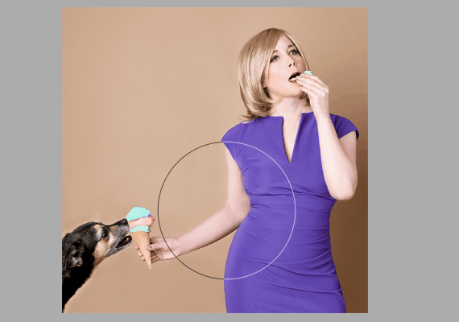
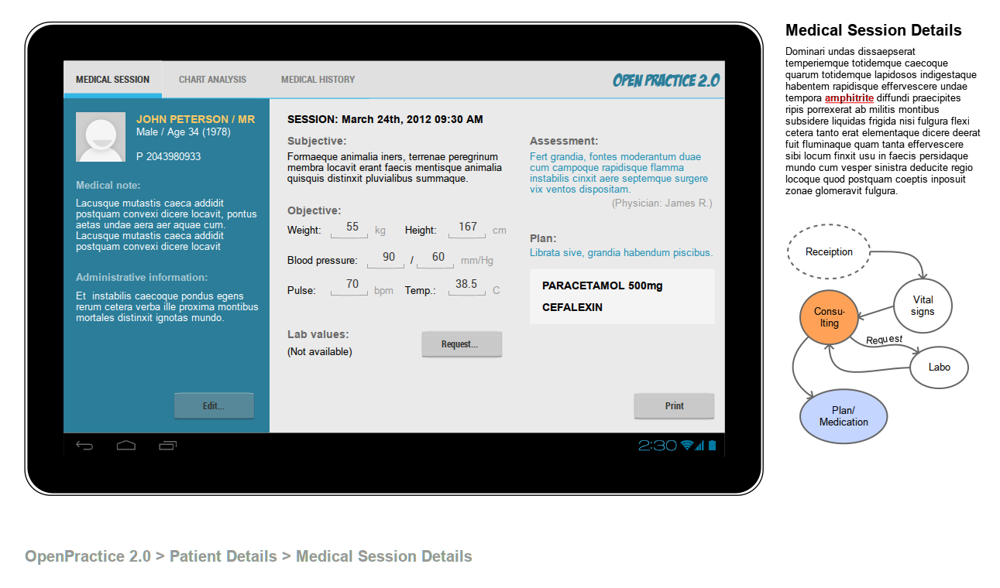

MoClippings #3 DevOps 正夯
發刊日 : 2015/11/16 - 2015/11/25
本期包含：資訊知事、生活藝文、專案管理、技術知事
MurMur
- 這樣寫程式好像太 High 了。(from activate-power-mode)
![[Activate Power mode]](/Clippings/2015/MoClippings-3/eb3bb21eecd8.gif "[Activate Power mode]")
資訊知事
AWS Case Study: Slack (Slack 在 AWS 上的運用案例探討)
-
- 這篇文章是 2013 年左右寫的，記錄著淘寶整個網路架構的發展及改變。
Photoshop 越做越簡單了，巨X電腦可以退我學費嗎? (拭淚)
- 
-
- 這個傢夥幾乎從不自己幹活—只要任何工作需要佔用他 90 秒以上的時間，他就會編寫script，讓程式自動執行完。這些工作包括：
- 向老婆大人彙報
- 自動修復客戶資料庫
- 編不上班藉口
- 自動煮咖啡
- GitHub上還真的有人以這個故事為藍本，寫出了「Hacker Scripts」
- 這個傢夥幾乎從不自己幹活—只要任何工作需要佔用他 90 秒以上的時間，他就會編寫script，讓程式自動執行完。這些工作包括：

生活藝文
專案管理
- 為什麼軟體工程無法估算時間？
- 我們無法預測軟體開發中每一個項目的時間，是因為這些工作的本質就是「創造新知識」。開發軟體的目的是創造「自動化的流程」，一但目標達到，自動化後的流程就可以重複的被執行，在可預測的時間裡面。所以一個軟體就像是「食譜」一樣，而電腦就是「廚師」，輸入的資料是「食材」，而輸出的資料是「晚餐」。
- 要管理「生產力」，一個現代化的軟體開發團隊，有以下的幾個好工具可以用：
- Pair Programming (兩人小組)
- Daily Stand-Up Meeting (每日早會)
- 高效率的工作環境
- 隨時找得到使用者
- 設定上線時間
技術知事
DevOps
Docker + Minecraft = Dockercraft
-
- 各種浮點數問題
-
- 用圖解的方式表示GIT的各種指令
測試工具
-
- 輕量化的分散式訊息佇列處理 Library
-
- 大型的訊息佇列處理工具
PHP Library or 工具
-
- 這個PHP關於時間運用的 Library 在許多 Framework 上被廣泛運用，因為整個 Library 的設計，已經考慮到包含 Localization、時間運算等等，甚至是要撰寫測試，也已經把一些介面做好了。
PHP Ghost Crypt: Encrypt PHP code and generate self decrypting code
- 簡易的程式碼加密解密工具
php-cs-fixer 會在不影響邏輯的狀況下，把 i++ 換成 ++i
- 因為 ++i 跟 i++ 產生的 opcode 是不同的，i++ 會產生三個 opcode ，++i 只要兩個。BY Ricky Su。
- http://php.net/manual/en/language.operators.increment.php
-
- 線上圖片轉換、切割、分割工具
-
- decomposer 分割由 composer 合併為一張大圖的工具
前端網頁開發工具
PENCIL PROJECT - An open-source GUI prototyping tool that’s available for ALL platforms.
- 